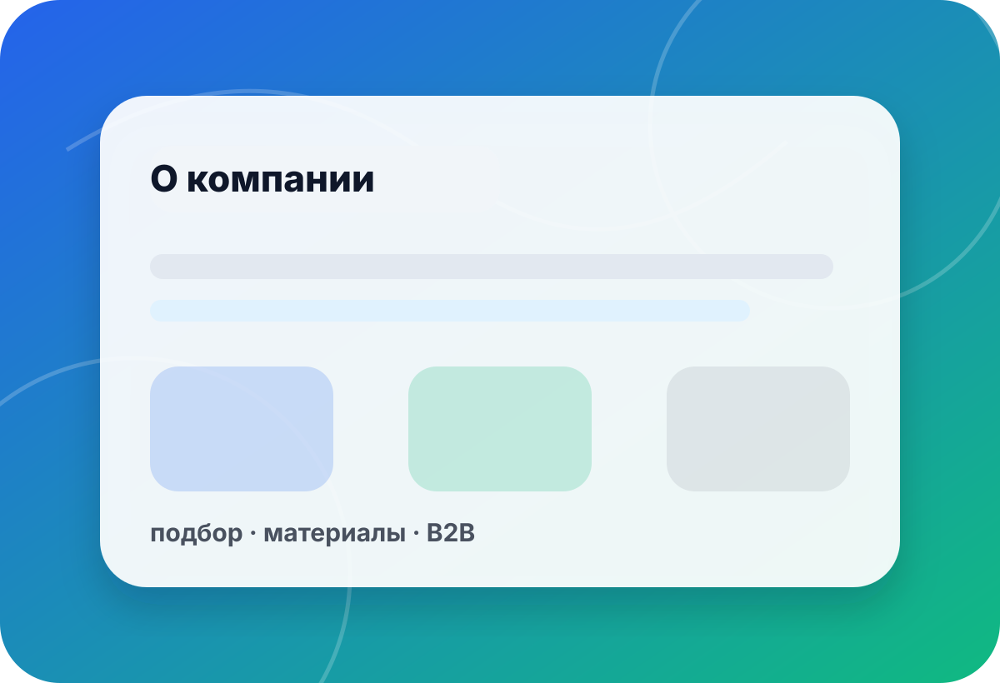

о компании · подход · preview
Mylco — не просто каталог, а помощь в выборе рабочего решения
Собираем материалы, расходники и оборудование вокруг задачи: форма, отливка, прозрачная заливка, прототип, дегазация или малая серия. В preview-версии сохраняем безопасный режим: без оплаты, backend и неподтверждённых обещаний.
- задача
- сначала
- комплект
- материалы
- B2B
- документы
- preview
- безопасно

подход
Сначала разбираем задачу
Так меньше риск купить неподходящий материал, забыть разделитель или выбрать оборудование без запаса.
Материал под формуУчитываем модель, поднутрения, Shore, тираж и материал будущей отливки.Смотреть силиконы →
Процесс без пузырейПомогаем продумать вакуум, тару, высоту смеси и режим дегазации.Смотреть оборудование →
Комплект и документыДля мастерских и юрлиц собираем запрос в понятный комплект с контактами и документами.Связаться →
направления
С чем работаем
Основные разделы уже приведены к единому preview-стилю и ведут в безопасные noindex-страницы.
 ◌
◌Силиконы для форм
Подбор основы, жёсткости и расходников под модель и заливку.
- платина / олово
- разделитель
- тираж
⬢Полиуретаны
Эластичные и жёсткие решения для форм, деталей и оснастки.
- нагрузка
- твёрдость
- ресурс
 ✦
✦Эпоксидные смолы
Заливки, покрытия, декор и макетные задачи с вниманием к технологии.
- слой
- прозрачность
- пузырьки
▣Жидкие пластики
Корпуса, прототипы, копии и малые серии после проверки формы.
- прочность
- скорость
- финиш
 ◎
◎Вакуумное оборудование
Камеры, насосы и комплектующие для дегазации материалов.
- объём
- тара
- цикл
 ✚
✚Производственные услуги
Реверсивный инжиниринг, 3D-печать и подготовка мастер-моделей.
- скан
- CAD
- прототип
принципы
Что важно для preview-версии
Безопасность запуска
Страницы закрыты от индексации и не подключают оплату, корзину или backend.
Сохраняем:noindex · static · GitHub PagesБез выдуманных обещаний
Цены, наличие, сроки и точные характеристики подтверждаются только после проверки.
Не пишем:цены · склад · гарантированные сроки · TDSПодбор по задаче
Пользователь видит не только товар, но и вопросы, которые влияют на результат.
Уточняем:материал · форма · объём · процессЕдиный визуальный язык
Ключевые страницы используют общий header, hero, CTA, карточки и мини-бриф.
Держим:структура · CTA · мобильность · доступностьмини-бриф
Расскажите, что нужно сделать
Форма в preview не отправляет данные на сервер. Для реального запуска подключается CRM/почта/мессенджер после согласования.